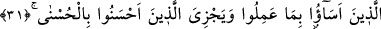
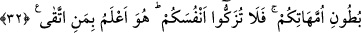

O, SİZİ EN İYİ BİLENDİR
26. Göklerde nice melek var ki onların şefâatleri, dilediği ve hoşnut olduğu kimse
için Allah’ın izin vermesi dışında, bir işe yaramaz.
27. Âhirete inanmayanlar, meleklere dişilerin adlarını takıyorlar.
28. Halbuki onların bu hususta hiç bilgileri yoktur. Sadece zanna uyuyorlar. Zan
ise hiç şüphesiz hakikat bakımından bir şey ifâde etmez.
29. Onun için sen bizi anmaktan yüz çeviren ve dünya hayatından başka bir şey
istemeyen kimselere yüz verme.
30. İşte onların erişebilecekleri bilgi budur. Şüphesiz ki senin Rabbin, evet O,
yolundan sapanı daha iyi bilir; O, hidâyette olanı da çok iyi bilir.
31. Göklerde ve yerde bulunanlar hep Allah’ındır. Bu, Allah’ın, kötülük edenleri
yaptıklarıyla
cezâlandırması,
güzel
davrananları
da
daha
güzeliyle
mükâfâtlandırması içindir.
32. Ufak tefek kusurları dışında, büyük günahlardan ve edepsizliklerden
kaçınanlara gelince, bil ki Rabbin, affı bol olandır. O, sizi daha topraktan yarattığı
zaman ve siz annelerinizin karınlarında bulunduğunuz sırada (bile), sizi en iyi
bilendir. Bunun için kendinizi temize çıkarmayın. Çünkü O, kötülükten sakınanı
daha iyi bilir.